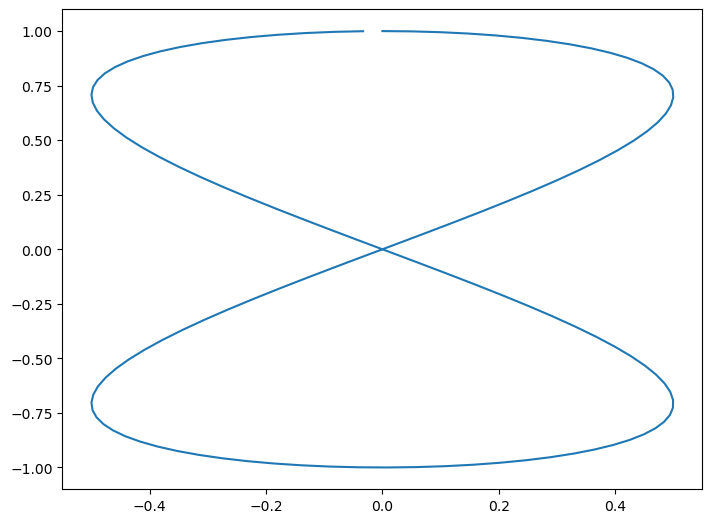
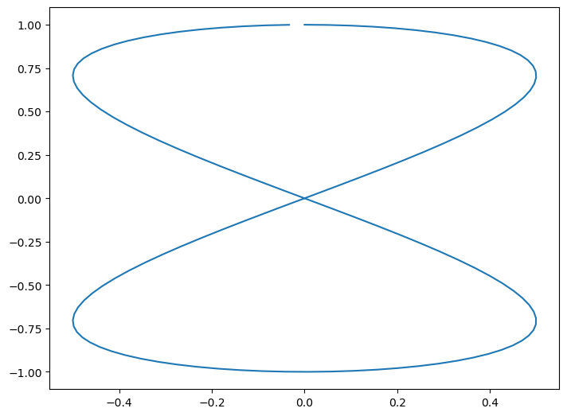

# Make plot
%matplotlib inline
import math
import matplotlib.pyplot as plt
import numpy as np
theta = np.arange(0, 4 * math.pi, 0.1)
eight = plt.figure()
axes = eight.add_axes([0, 0, 1, 1])
axes.plot(0.5 * np.sin(theta), np.cos(theta / 2))
In questo corso, utilizzeremo Python all’interno di un ambiente Jupyter Notebook. L’appendice Appendice A fornisce le istruzioni per installare Jupyter Notebook sul vostro computer.
In alternativa, è possibile scrivere uno script Python in un file con estensione .py, il quale può essere eseguito tramite il comando python nome_file.py dalla linea di comando.
I Jupyter Notebook offrono un ambiente interattivo in cui è possibile eseguire il codice suddiviso in celle. Sebbene sia possibile eseguire il codice nelle celle in qualsiasi ordine, è considerata una pratica consigliata eseguirle in sequenza al fine di prevenire errori e garantire una corretta esecuzione del codice.
I Jupyter Notebook supportano due tipi di celle:
Celle di Testo: Queste celle consentono di scrivere testo formattato utilizzando la sintassi Markdown. Questo permette agli autori di inserire del testo descrittivo, comprese immagini, formule in formato \(\LaTeX\), tabelle e altro ancora. Le celle di testo facilitano la documentazione del processo di analisi dei dati in modo chiaro e comprensibile.
Celle di Codice: Le celle di codice consentono di scrivere e eseguire codice Python. Il codice può essere eseguito facendo clic sul triangolo situato a sinistra di ogni cella. Diverse celle possono contenere istruzioni diverse e possono essere eseguite in sequenza. È importante notare che una funzione definita in una cella precedente può essere utilizzata solo se la cella precedente è stata eseguita.
Qui sotto abbiamo una cella di codice.
# Make plot
%matplotlib inline
import math
import matplotlib.pyplot as plt
import numpy as np
theta = np.arange(0, 4 * math.pi, 0.1)
eight = plt.figure()
axes = eight.add_axes([0, 0, 1, 1])
axes.plot(0.5 * np.sin(theta), np.cos(theta / 2))
Quando lavori con il notebook, puoi essere all’interno di una cella, digitando i suoi contenuti, oppure al di fuori delle celle, muovendoti nel notebook.
Quando sei all’interno di una cella, premi Esc per uscirne. Quando ti muovi al di fuori delle celle, premi Invio per entrare.
Il nome "Jupyter" deriva dalle tre principali lingue di programmazione supportate: Julia, Python e R. Tuttavia, è possibile utilizzare i Jupyter Notebook con molte altre lingue di programmazione.I Jupyter Notebook possono essere eseguiti sia in locale, sul vostro computer, che su un server remoto, come Google Colab. Questa flessibilità permette agli utenti di accedere ai propri notebook da qualsiasi dispositivo connesso a Internet e di condividere agevolmente il proprio lavoro con altri.
I Jupyter Notebook sono strumenti che agevolano la programmazione in Python grazie a un componente essenziale: il kernel. Quest’ultimo funge da motore di esecuzione per il codice Python presente nelle celle dei notebook. Ogni volta che eseguite una cella, il suo contenuto viene processato dal kernel. La caratteristica più significativa del kernel è la sua capacità di preservare lo stato delle variabili e delle funzioni tra le diverse celle. In pratica, ciò significa che potete definire variabili o funzioni in una cella e poi riutilizzarle in celle successive. Questa interattività facilita l’esecuzione iterativa del codice e offre un modo dinamico per esplorare i dati.
Durante l’installazione di Jupyter Notebook, di norma ricevete anche IPython, un kernel ottimizzato per Python.
Si noti che il kernel Python deve essere installato all’interno di un ambiente di sviluppo dedicato noto come “ambiente virtuale” (per ulteriori dettagli, si veda {ref}sec-virtual-environment). Questo ambiente svolge un ruolo fondamentale nel separare e isolare le librerie e le dipendenze necessarie per il kernel. Ciò aiuta a evitare conflitti tra diverse configurazioni e garantisce il corretto funzionamento del codice nel contesto desiderato. L’utilizzo di ambienti specifici risulta particolarmente vantaggioso nei progetti che richiedono versioni particolari di librerie.
In questo insegnamento, faremo ampio uso della funzionalità conda, inclusa nell’installazione di Anaconda, per la gestione di questi ambienti. conda mette a disposizione funzioni utili per la creazione, la gestione e l’attivazione di ambienti separati, ciascuno con le sue configurazioni e dipendenze uniche. Questa capacità semplifica notevolmente la transizione tra diversi ambienti, garantendo che ogni progetto o kernel disponga delle risorse necessarie per operare in modo efficiente e senza interferenze.
Il modo più semplice di usare un Jupyter Notebook è all’interno di Visual Studio Code. Dopo aver installato Visual Studio Code, è necessario installare l’estensione Python per sfruttare le funzionalità specifiche per Python, inclusa la capacità di lavorare con Jupyter Notebook.
Una volta completate le installazioni, siete pronti per creare il vostro primo Jupyter Notebook in VS Code.
File > New File.Ctrl+Shift+P per aprire la Palette dei Comandi.Jupyter: Create New Blank Notebook.